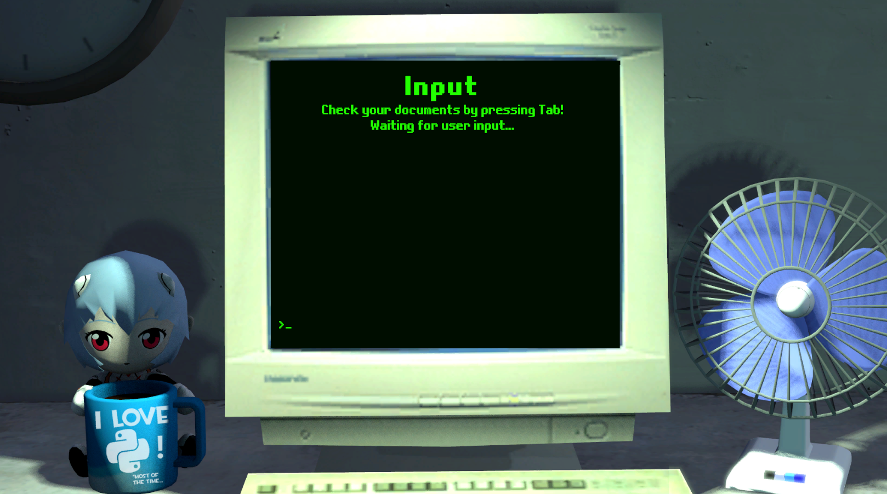

Turing's Case
Lógica Matêmatica
Video do Projeto
Oque é o Turing's Case?
Desenvolvido para a máteria de lógica matêmatica, o trabalho em si era bem simples, desenvolver um mistério que precisa ser
resolvido usando tabela verdade, o que o professor invisionou foi provavelmente um programa simples de console feito no python,
porém o turing's case acabou sendo muito mais que só isso, como foi o último trabalho onde uma lingua não foi especificada eu
finalmente consegui uma desculpa para desenvolver algo em C# na Unity, ela é a engine que eu venho usando desde os 13 anos quando
cansei de lutar com o Clickteam Fuzion para fazer qualquer projeto de larga escala funcionar. Por isso eu queria desenvolver algo
dentro dela no primeiro semestre.
O resultado final foi bem satisfatorio, tanto para o meu grupo para o professor, porém por detalhes que ficaram claros ao longo
deste artigo, ele não foi desenvolvido de uma forma que me satisfez.
Minha Contribuição
Por ser uma equipe pequena e todos os membros estarem entusiastas com o projeto, foi facilmente o meu projeto favorito de desenvolver
neste primeiro semestre, enquanto a Anna ficou encarregada de desenvolver a hístoria e a tabela verdade em si, eu me encarreguei de
desenvolver a engine gráfica do jogo. Quando eu trouce a ídea de usar a Unity na primeira vez, o meu grupo não ficou muito contente
com a proposta pois queriam trabalhar no código também, e naquele tempo eu era o único do grupo com expêriencia real em Unity e C#,
por isso o meu primeiro prototipo foi uma "Engine" que mostra gráficos ASCII em python, você pode lêr mais sobre ela em
Extras. No final após alguns protitipos, faltando dois dias para o prazo final decidimos que eu faria o desenvolvimento
do jogo na Unity.
Foi bem puxado, mas deu tudo certo no final, eu fiz tanto os gráficos como todo o código em C#, os gráficos foram feitos por mim em call
com o Guilherme no Source Film Maker, outro programa que também uso junto com a Unity para gerar a parte gráfica desde pequeno.
Oque Aprendi
Embora não tenha me ensinado muito na parte de programação em si, pois trabalhar sozinho na Unity é o meu workflow desde criança. Ainda assim foi útil para me mostrar como é trabalhar em um projeto em que todos os membros estão preocupados em fazer dele o melhor que pode ser.